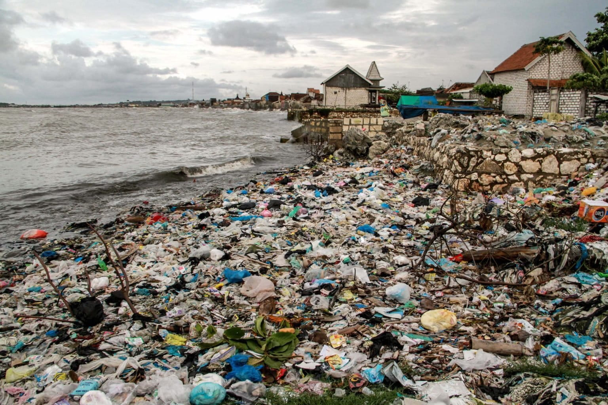

Kami memilih tema ini karena banyak produk-produk yang digunakan sehari-hari tidak organik sehingga mencemarkan lingkungan sekitar. Produk-produk yang dimaksud mulai dari plastik, styrofoam, dan bahan anorganik lainnya.

Nilai Serviam
Cinta pada lingkungan dan peduli sehingga merawat dan menjaga lingkungan.
Totalitas dalam melestarikan lingkungan dan banyak peduli dengan lingkungan.